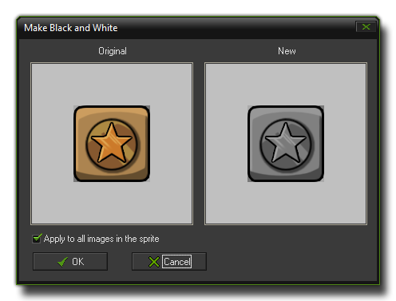
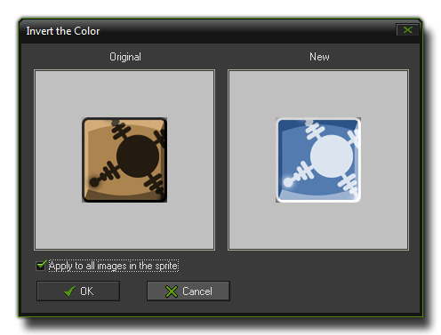

The Sprite Editor Images Menu
This section explains the functions associated
with the GameMaker: Studio sprite editor "Image" drop down
menu.
 The "Images" drop
down menu offers a number of handy options to change the colours,
transparencies and other details of the sub-images of your sprite.
If you use these commands from the actual sub-image editor then the
options chosen will only be applied to the currently selected
sub-image, however if you use these commands from the sprite editor
they can be applied to all sub-images by ticking the appropriate
check-box.
The "Images" drop
down menu offers a number of handy options to change the colours,
transparencies and other details of the sub-images of your sprite.
If you use these commands from the actual sub-image editor then the
options chosen will only be applied to the currently selected
sub-image, however if you use these commands from the sprite editor
they can be applied to all sub-images by ticking the appropriate
check-box.
- Cycle Left and Cycle Right: Cycles all images one place
to the left or to the right, so that the order of the sprite
animation is changed.
- Greyscale: Converts the image (or images) into
greyscale. 
- colourize: Here you can change the colour (hue) of the
image(s). There is a slider which you can use as well as an input
box to directly input a new value. The normal effect is to
colourize the image(s) with the selected hue, but when you mark the
"shift hue" check-box, the original colours are shifted over the
amount indicated giving some rather interesting effects.

- colourize Partial: Here you can change the colour (hue)
of part of the image(s). You use the top slider (or the input box)
to select the new colour you wish, then change the second slider
(or input box) to select the colour you wish to change (or click
the left image on the colour). The tolerance slider changes the
dynamic range to be changed, from a very narrow selection to a very
broad selection, meaning that you can single out specific colours
or whole ranges to change.
- Intensity: Here you can change the intensity
(luminosity) and saturation (amount of colour) in the selected
image(s).
- Invert: Inverts the colours in the image(s). 
- Make Opaque: Remove all transparency information from
the image(s), making them opaque.

- Erase a colour: You can select a colour to erase with
this either by clicking on the colour box or by clicking somewhere
in the left image. You then specify the tolerance with a slider to
set the "range" of pixels to be included in the action. All pixels
with a colour close the selected colour and within the tolerance
level will be made transparent.
- Smooth Edges: This will smooth the edges around the
opaque part of the image(s) to make them look nicer. Should you
require a stronger effect, this can be achieved using Blur (see
below) but only selecting to blur the transparency.
- Opacity: Here you can change the opacity (transparency)
for the whole image (or images). You can either set it relative to
the current opacity, meaning that it will be added/subtracted from
the existing transparency values, or absolute so that the existing
transparencies are overwritten by the new value. Note that fully
transparent pixels always stay fully transparent.
- Set Alpha from File: This is a very interesting function
that takes the luminosity values from a file and applies them to
the alpha channel (transparency) of the image. These values are
calculated based on how light or dark each pixel is, with white
being fully opaque, black being fully transparent and everything
else somewhere in the middle. The ideal images to use are those
that have no colour information and are purely greyscale, and it
should be the same size as the target sub-image(s) of the sprite
(however, if it is larger or smaller it will be scaled to fit). The
image below illustrates how it works:
- Fade: Here you specify a colour and an amount and the
pixels in the image(s) are now faded towards this colour with the
given amount.
- Blur: This option can be used to blur the image(s).
There are options to choose the quantity of blur to be used as well
as to select whether you wish to blur just the colour information,
the transparencies or both. Only blurring the transparency values
can be a nice way to smooth the boundary of the image(s).
- Sharpen: This option can be used to sharpen certain
details within an image (or images). This is sort of the reverse of
blurring as sharpening enhances the edges of the image, with you
choosing how subtle or strong you wish the effect to be and whether
to sharpen the transparent edges only, the coloured edges only or
both. The special sharpening puts additional emphasis on details
and can leading to an interesting effect.

- Outline: You can use this command to create an outline
around the image(s). You are asked for the colour and a thickness
of the outline, as well as whether to position it inside the image
or not. You can also indicate that you wish to remove the image(s)
as well, leaving only the outline itself. Finally, there is an
option to smooth the outline, which lightly blurs the edges to give
it a more rounded feel.
- Shadow: This command will create a "drop" shadow below
the image(s). The available options permit you to select the colour
of the shadow and the position, as well as the alpha (transparency)
and whether you wish the edges of the shadow to be hard or soft
(blurred or not).
- Glow: Create a coloured glow around the image, where you
can indicate the colour of the glow, the opacity and the thickness.
You can also indicate to place the glow inside the image.
- Buttonize: Turn the image(s) into a button. You specify
the colour of the button and the opacity of the effect. You must
also indicate the thickness of the button boundary and whether it
should be smooth or not, with a smooth button having a much more
rounded look to it.
- Gradient Fill: Adds a gradient fill to the image(s). You
can specify the two colours to create the gradient between, the
overall opacity and the type of gradient to use. Default the image
is replace by the gradient although the transparency is maintained,
but by un-checking the "Replace" box the gradient is blended onto
the image. By checking the "Change Transparency" box the alpha
value of the original image is changed as well.
© Copyright YoYo Games Ltd. 2018 All Rights Reserved